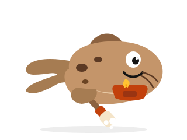

User temp, npm, pip, pnpm, yarn, NuGet, and Rush repos you add yourself.
I scrub the caches.
Sucky looks through the usual Windows junk folders and shows you what is safe to clear. You pick the ones that leave.
Windows 10 or 11, 64-bit. The setup file adds Sucky to the Start menu. Nothing is deleted until you open the app and press Clean.

I never scan the whole drive. Files that are in use stay where they are.
Cleaning is permanent. Sucky tells you the size first, then what actually left.